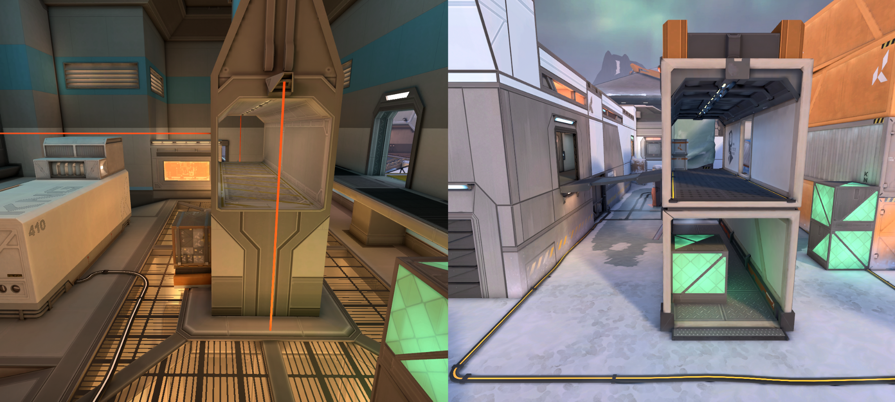

ICEBOX
Valorant'a son olarak eklenen icebox haritasi bir çok oyuncu için adeta kabus oldu. Rekabetçi sistemde çoğu oyuncu için çekilmez olarak görülen ve oyuncuların en çok dodge yaptığı map olarak göze batan icebox öyle ya da böyle Valorant rekabetçi haritaları içerisine dahil oldu.


